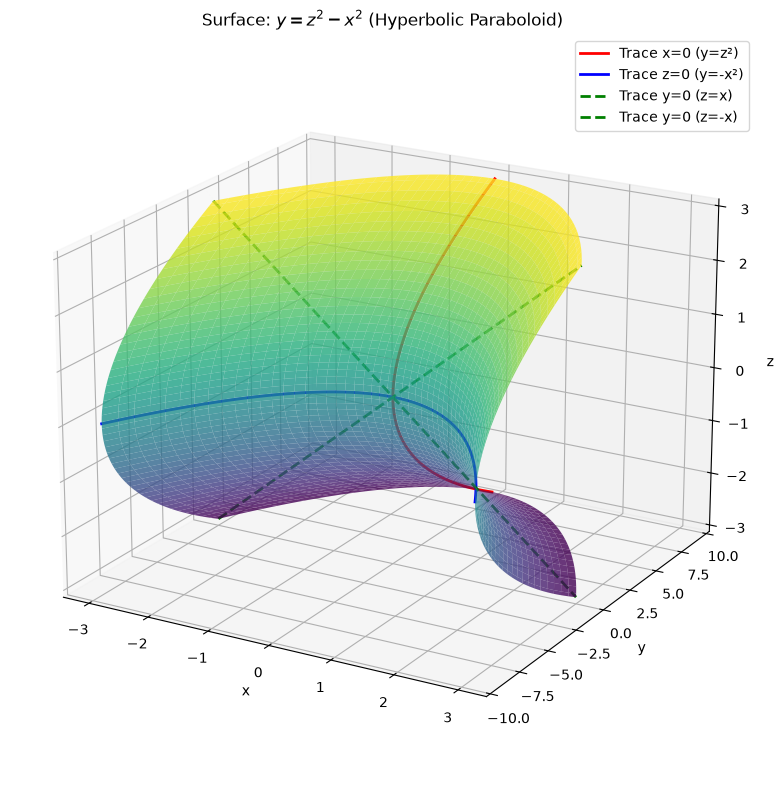
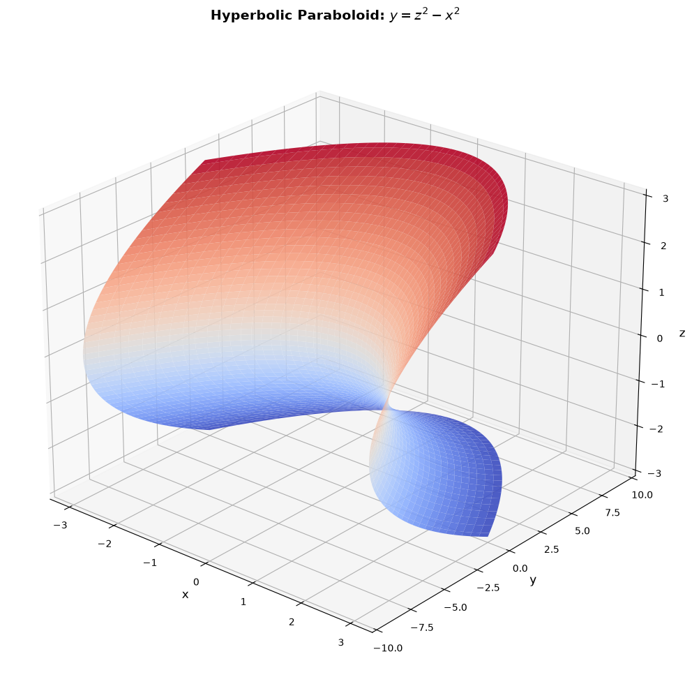
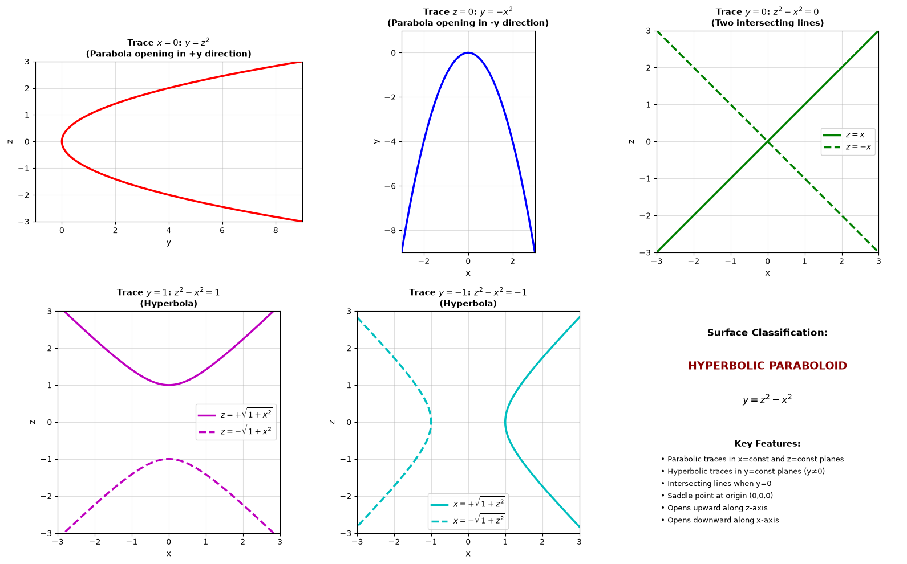
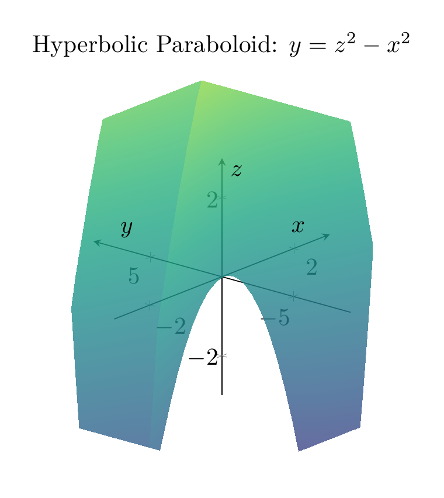
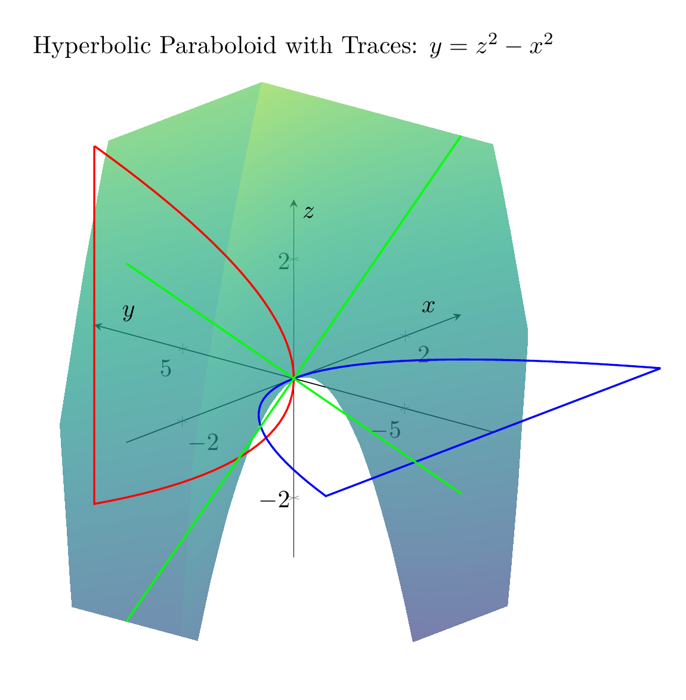
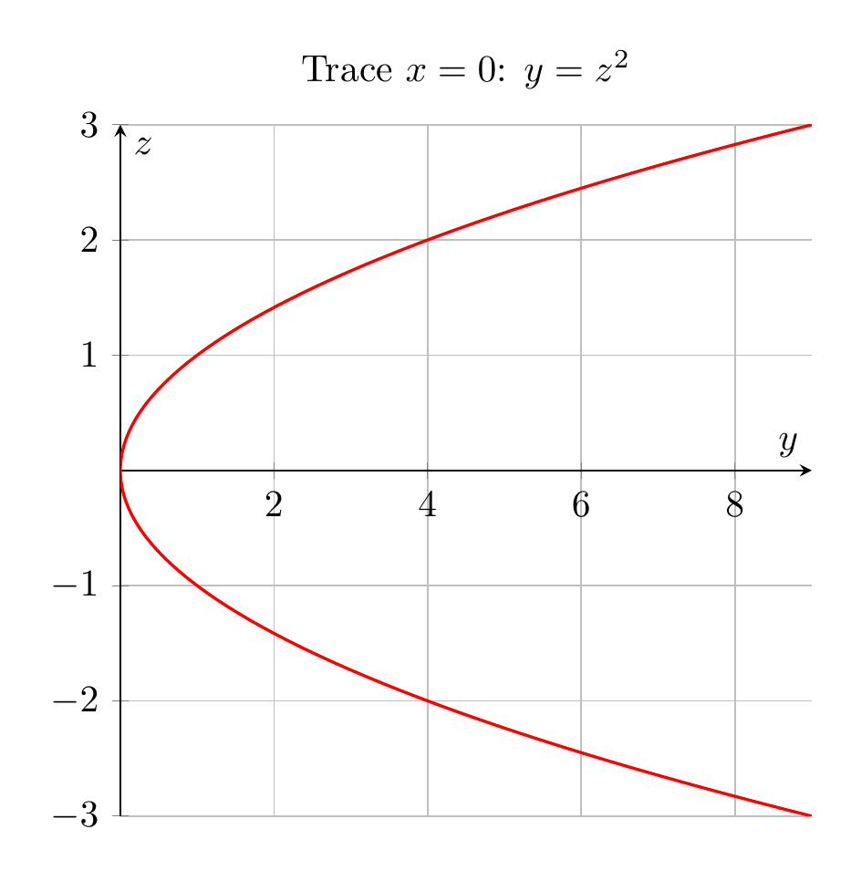

Path: mcma-Qwen3.5-397B-A17B/calculus-12.6.19/chat_20260823_213318_421086_utc_0800
Problem
Please solve the math problem in the image.

End of problem
Answer
# Solution: Using Traces to Sketch and Identify the Surface $y = z^2 - x^2$
## Step 1: Understanding Traces
**Traces** are the curves formed by intersecting a surface with planes parallel to the coordinate planes. By examining traces in different planes, we can understand the 3D shape of a surface.
## Step 2: Analyzing Traces in Different Planes
### Trace in the plane $x = 0$ (yz-plane):
Setting $x = 0$ in the equation $y = z^2 - x^2$:
$$y = z^2 - 0^2 = z^2$$
This is a **parabola** in the yz-plane that opens in the positive y-direction with vertex at the origin.
### Trace in the plane $z = 0$ (xy-plane):
Setting $z = 0$ in the equation:
$$y = 0^2 - x^2 = -x^2$$
This is a **parabola** in the xy-plane that opens in the negative y-direction with vertex at the origin.
### Trace in the plane $y = 0$ (xz-plane):
Setting $y = 0$ in the equation:
$$0 = z^2 - x^2 \implies z^2 = x^2 \implies z = \pm x$$
This gives us **two intersecting lines** in the xz-plane: $z = x$ and $z = -x$, which cross at the origin.
### Trace in the plane $y = c$ (where $c \neq 0$):
Setting $y = c$ (a constant):
$$c = z^2 - x^2 \implies z^2 - x^2 = c$$
- When $c > 0$ (e.g., $y = 1$): $z^2 - x^2 = 1$ is a **hyperbola** opening along the z-axis
- When $c < 0$ (e.g., $y = -1$): $z^2 - x^2 = -1$, or $x^2 - z^2 = 1$, is a **hyperbola** opening along the x-axis
## Step 3: Identifying the Surface
Based on the trace analysis:
- **Parabolic traces** in planes parallel to the yz-plane ($x = \text{const}$) and xy-plane ($z = \text{const}$)
- **Hyperbolic traces** in planes parallel to the xz-plane ($y = \text{const}$, $y \neq 0$)
- **Intersecting lines** when $y = 0$
This pattern of traces is characteristic of a **hyperbolic paraboloid**.
## Step 4: Key Features of the Surface
1. **Saddle Point**: The origin $(0, 0, 0)$ is a saddle point (neither a maximum nor minimum)
2. **Axis Orientation**: The surface opens upward along the z-axis and downward along the x-axis
3. **Symmetry**: The surface is symmetric with respect to both the xz-plane and yz-plane
4. **Standard Form**: The equation $y = z^2 - x^2$ is already in the standard form of a hyperbolic paraboloid
## Conclusion
The surface $y = z^2 - x^2$ is a **hyperbolic paraboloid**.
This surface is sometimes called a "saddle surface" because of its distinctive shape. It's a doubly-ruled surface, meaning that through every point on the surface, there are two straight lines that lie entirely on the surface.
$\boxed{\text{Hyperbolic Paraboloid}}$
---



\documentclass[border=10pt]{standalone}
\usepackage{pgfplots}
\pgfplotsset{compat=1.18}
\begin{document}
\begin{tikzpicture}
\begin{axis}[
xlabel=$x$,
ylabel=$y$,
zlabel=$z$,
title={Hyperbolic Paraboloid: $y = z^2 - x^2$},
view={-50}{25},
colormap/viridis,
grid=none,
axis lines=center,
domain=-3:3,
y domain=-3:3,
samples=50,
samples y=50,
zmin=-3, zmax=3,
xmin=-3, xmax=3,
ymin=-9, ymax=9,
]
\addplot3[surf, opacity=0.8, shader=interp] {y^2 - x^2};
\end{axis}
\end{tikzpicture}
\end{document}

\documentclass[border=10pt]{standalone}
\usepackage{pgfplots}
\pgfplotsset{compat=1.18}
\begin{document}
\begin{tikzpicture}
\begin{axis}[
xlabel=$x$,
ylabel=$y$,
zlabel=$z$,
title={Hyperbolic Paraboloid with Traces: $y = z^2 - x^2$},
view={-50}{25},
colormap/viridis,
grid=none,
axis lines=center,
domain=-3:3,
y domain=-3:3,
samples=40,
samples y=40,
zmin=-3, zmax=3,
xmin=-3, xmax=3,
ymin=-9, ymax=9,
width=12cm,
height=10cm,
]
% Main surface
\addplot3[surf, opacity=0.7, shader=interp] {y^2 - x^2};
% Trace x=0 (red parabola)
\addplot3[red, thick, domain=-3:3, samples=50] ({0}, {x^2}, {x});
% Trace z=0 (blue parabola)
\addplot3[blue, thick, domain=-3:3, samples=50] ({x}, {-x^2}, {0});
% Trace y=0 (green lines)
\addplot3[green, thick, domain=-3:3, samples=50] ({x}, {0}, {x});
\addplot3[green, thick, dashed, domain=-3:3, samples=50] ({x}, {0}, {-x});
\end{axis}
\end{tikzpicture}
\end{document}

\documentclass[border=10pt]{standalone}
\usepackage{pgfplots}
\pgfplotsset{compat=1.18}
\begin{document}
\begin{tikzpicture}
\begin{axis}[
xlabel=$y$,
ylabel=$z$,
title={Trace $x=0$: $y = z^2$},
grid=both,
axis lines=center,
domain=0:9,
samples=100,
ymin=-3, ymax=3,
xmin=0, xmax=9,
width=8cm,
height=8cm,
]
\addplot[red, thick, domain=-3:3] ({x^2}, {x});
\end{axis}
\end{tikzpicture}
\end{document}

End of answer